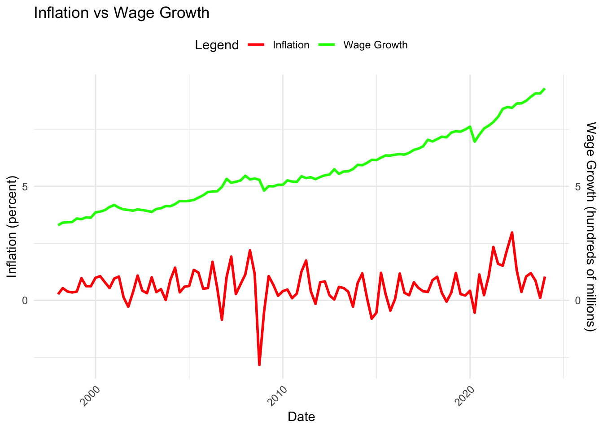
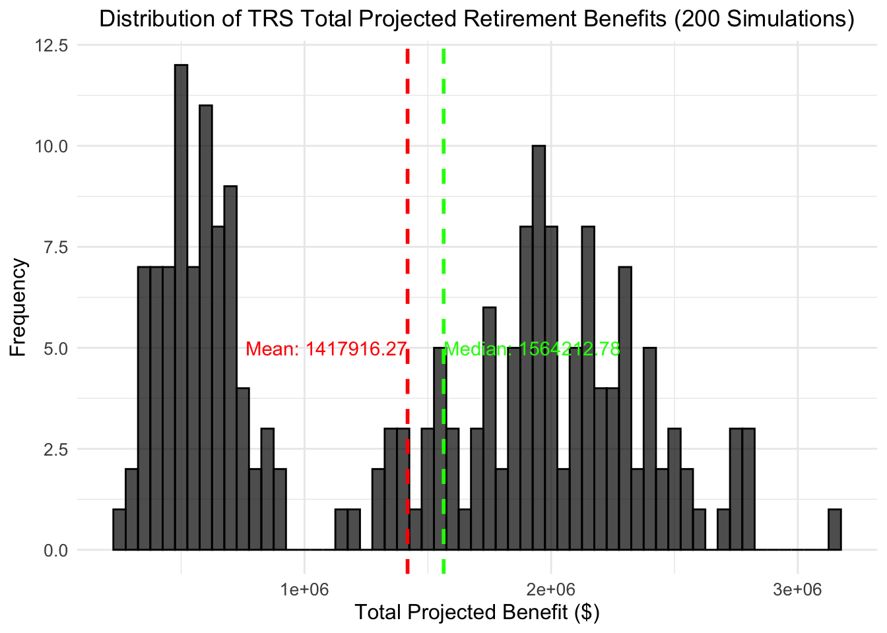
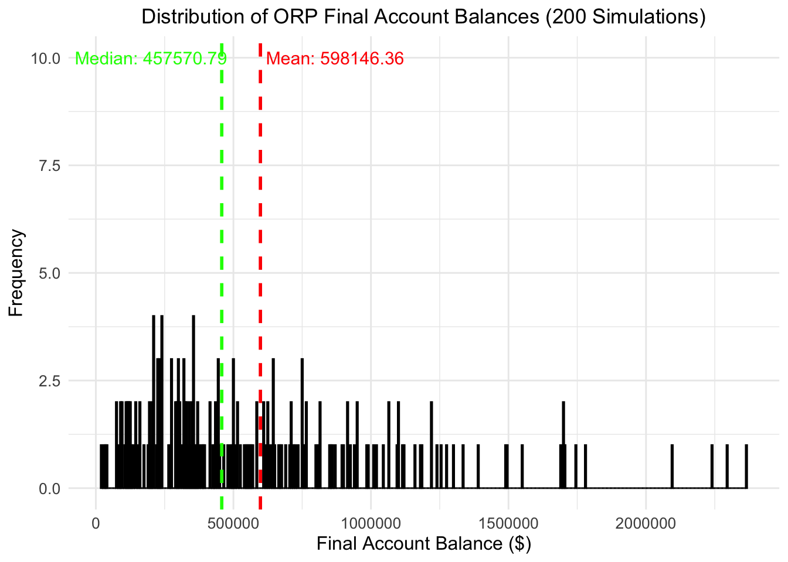

In this project, we will simulate the role of a financial advisor in order to explore the benefits and drawbacks of the two retirement plans offered to CUNY employees. When hired, CUNY employees have 30 days to select one of two retirement plans: either a plan offered by the Teachers’ Retirement System of New York City (TRSNYC), or a plan offered by the Teachers’ Insurance and Annuity Association of America (TIAA). This decision is permanent and cannot be altered later. In order to determine which plan outperforms the other, we will use historical financial data and a “bootstrap inference method” in order to draw our conclusion.
TASK 1: Register for Alpha Vantage API Key
We will begin our work by importing the necessary libraries:
Code
library(dplyr)## ## Attaching package: 'dplyr'## The following objects are masked from 'package:stats':## ## filter, lag## The following objects are masked from 'package:base':## ## intersect, setdiff, setequal, unionlibrary(httr)library(knitr)library(readr)library(stringr)library(tidyr)library(tidyverse)## ── Attaching core tidyverse packages ──────────────────────── tidyverse 2.0.0 ──## ✔ forcats 1.0.0 ✔ purrr 1.0.2## ✔ ggplot2 3.5.1 ✔ tibble 3.2.1## ✔ lubridate 1.9.3## ── Conflicts ────────────────────────────────────────── tidyverse_conflicts() ──## ✖ dplyr::filter() masks stats::filter()## ✖ dplyr::lag() masks stats::lag()## ℹ Use the conflicted package (<http://conflicted.r-lib.org/>) to force all conflicts to become errorslibrary(ggplot2)library(sf)## Linking to GEOS 3.11.0, GDAL 3.5.3, PROJ 9.1.0; sf_use_s2() is TRUElibrary(lubridate)
Once we have imported our libraries, we will head to the AlphaVantage website to create an AlphaVantage API Key to obtain the U.S stock market and International stock market data necessary for our analysis.
TASK 2: Register for FRED API Key
Once we have imported our libraries and secured our AlphaVantage API Key, we will head to the St. Louis Fed (or FRED) website to create a FRED API key to obtain the wage growth, inflation, and short debt data necessary for our analysis.
TASK 3: Data Acquisition
Now that we have our API keys for our data access, we will begin automating our data import. For our analysis, we will need data on five main metrics: wage growth, inflation, U.S stock performance, International stock performance, and short term debt.
To start, we will import data from FRED on quarterly wage growth in New York State for the last decade. We will then save the imported dataframe as a CSV file locally in case we need to reference the local data later.
Code
## LOAD REQUIRED LIBRARIES ##library(httr)library(jsonlite)## ## Attaching package: 'jsonlite'## The following object is masked from 'package:purrr':## ## flatten## WAGE GROWTH ### Define the FRED API endpoint and the FRED API keyapi_key <-"ffc31969aa3d7177ca28636e5b65c963"base_url <-"https://api.stlouisfed.org/fred/"# Define the FRED series ID for the data you want to downloadseries_id <-"NYWTOT"# Build the URL to get the data for a specific seriesurl <-paste0(base_url, "series/observations")# Define the query parametersparams <-list(series_id = series_id, # The series IDapi_key = api_key, # The API keyfile_type ="json", # Specify the file type as JSONfrequency ="q", # Data frequencyunits ="lin", # Linear unitsstart_date ="2014-04-01", # Start dateend_date ="2024-04-01"# End date)# Make the GET request to the FRED APIresponse <-GET(url, query = params)# Check if the request was successful (status code 200 means OK)if (status_code(response) ==200) {# Parse the JSON response data <-fromJSON(content(response, "text"))# Extract the observations observations <- data$observations# Convert to a data frame data_wagegrowth <-as.data.frame(observations)# Display the first few rows of the datahead(data_wagegrowth)# Save the data to a CSV filewrite.csv(data_wagegrowth, "fred_data_wagegrowth.csv", row.names =FALSE)# If the request succeeds, print a download messagecat("Data has been successfully downloaded and saved as 'fred_data_wagegrowth.csv'.\n")} else {# If the request fails, print an error messagecat("Failed to retrieve data. Status code:", status_code(response), "\n")}## Data has been successfully downloaded and saved as 'fred_data_wagegrowth.csv'.
Next, we will import data from FRED on quarterly inflation in the United States for the last decade. We will do this to make aligning and combining our wage growth and inflation data easier later on in our project. We will then save the imported dataframe as a CSV file locally in case we need to reference the local data later.
Code
## INFLATION ### Define the FRED API endpoint and the FRED API keyapi_key <-"ffc31969aa3d7177ca28636e5b65c963"base_url <-"https://api.stlouisfed.org/fred/"# Define the FRED series ID for the data you want to downloadseries_id <-"CPALTT01USQ657N"# Build the URL to get the data for a specific seriesurl <-paste0(base_url, "series/observations")# Define the query parametersparams <-list(series_id = series_id, # The series IDapi_key = api_key, # The API keyfile_type ="json", # Specify the file type as JSONfrequency ="q", # Data frequencyunits ="lin", # Linear unitsstart_date ="2014-04-01", # Start dateend_date ="2024-04-01"# End date)# Make the GET request to the FRED APIresponse <-GET(url, query = params)# Check if the request was successful (status code 200 means OK)if (status_code(response) ==200) {# Parse the JSON response data <-fromJSON(content(response, "text"))# Extract the observations observations <- data$observations# Convert to a data frame data_inflation <-as.data.frame(observations)# Display the first few rows of the datahead(data_inflation)# Save the data to a CSV filewrite.csv(data_inflation, "fred_data_inflation.csv", row.names =FALSE)# If the request succeeds, print a download messagecat("Data has been successfully downloaded and saved as 'fred_data_inflation.csv'.\n")} else {# If the request fails, print an error messagecat("Failed to retrieve data. Status code:", status_code(response), "\n")}## Data has been successfully downloaded and saved as 'fred_data_inflation.csv'.
Next, we will import data from AlphaVantage on a monthly U.S stock index to measure U.S stock performance. We will use the S&P500 stock index for our analysis. In AlphaVantage, the symbol for the S&P500 is not the standard “^GSPC”, but rather “SPY”.
Code
## US EQUITY MARKET TOTAL RETURNS ### Define the Alpha Vantage API key and base URLapi_key <-"13OR5QPKL3DGT9U6"# Alpha Vantage API keysymbol <-"SPY"# S&P 500 ETFfunction_type <-"TIME_SERIES_MONTHLY"# Monthly historical dataoutput_size <-"full"# Full time series# Construct the API request URLurl <-paste0("https://www.alphavantage.co/query?function=", function_type,"&symbol=", symbol, "&apikey=", api_key, "&outputsize=", output_size)# Make the API requestresponse <-GET(url)# Check if the request was successfulif (status_code(response) ==200) {# Parse the JSON content of the response data <-content(response, "parsed", type ="application/json")# Extract the historical time series data (if present)if (function_type =="TIME_SERIES_MONTHLY") { time_series <- data[["Monthly Time Series"]]# Convert the time series into a data frameif (!is.null(time_series)) {# Convert the list to a data frame where each date is a row data_sap500 <-as.data.frame(do.call(rbind, lapply(time_series, unlist)))# Set column names for open, high, low, close, volumecolnames(data_sap500) <-c("open", "high", "low", "close", "volume")# Convert the row names to a date column data_sap500$date <-rownames(data_sap500)rownames(data_sap500) <-NULL# Remove row names# Ensure the date column is in Date format (using the first of each month) data_sap500$date <-as.Date(paste0(data_sap500$date, "-01"))# Print out the first few rows of the data frameprint(head(data_sap500)) } else {print("Error: No time series data found.") } }} else {# If the request was unsuccessful, print the error messageprint(paste("Request failed with status:", status_code(response)))print(content(response, "text"))}## open high low close volume date## 1 602.9700 607.9100 602.3410 607.6600 98902515 2024-12-04## 2 571.3200 603.3500 567.8900 602.5500 901761281 2024-11-29## 3 573.4000 586.1200 565.2700 568.6400 976134821 2024-10-31## 4 560.4700 574.7100 539.4400 573.7600 1044167074 2024-09-30## 5 552.5700 564.2000 510.2700 563.6800 1244598926 2024-08-30## 6 545.6300 565.1600 537.4500 550.8100 1038489736 2024-07-31
Next, we will import data from AlphaVantage on a monthly International stock index to measure International stock performance. We will use the MSCI stock index for our analysis. In AlphaVantage, the symbol for the MSCI is not the standard “MSCI”, but rather “EFA”.
Code
## INTL EQUITY MARKET TOTAL RETURNS ### Define the Alpha Vantage API key and base URLapi_key <-"13OR5QPKL3DGT9U6"# Alpha Vantage API keysymbol <-"EFA"# MSCI Developed Markets ETFfunction_type <-"TIME_SERIES_MONTHLY"# Monthly historical dataoutput_size <-"full"# Full time series# Construct the API request URLurl <-paste0("https://www.alphavantage.co/query?function=", function_type,"&symbol=", symbol, "&apikey=", api_key, "&outputsize=", output_size)# Make the API requestresponse <-GET(url)# Check if the request was successfulif (status_code(response) ==200) {# Parse the JSON content of the response data <-content(response, "parsed", type ="application/json")# Extract the historical time series data (if present)if (function_type =="TIME_SERIES_MONTHLY") { time_series <- data[["Monthly Time Series"]]# Convert the time series into a data frameif (!is.null(time_series)) {# Convert the list to a data frame where each date is a row data_msci <-as.data.frame(do.call(rbind, lapply(time_series, unlist)))# Set column names for open, high, low, close, volumecolnames(data_msci) <-c("open", "high", "low", "close", "volume")# Convert the row names to a date column data_msci$date <-rownames(data_msci)rownames(data_msci) <-NULL# Remove row names# Ensure the date column is in Date format (using the first of each month) data_msci$date <-as.Date(paste0(data_msci$date, "-01"))# Print out the first few rows of the data frameprint(head(data_msci)) } else {print("Error: No time series data found.") } }} else {# If the request was unsuccessful, print the error messageprint(paste("Request failed with status:", status_code(response)))print(content(response, "text"))}## open high low close volume date## 1 79.0800 79.8750 78.5700 79.7000 39349751 2024-12-04## 2 79.6500 80.3400 76.7017 78.9700 249509400 2024-11-29## 3 83.6600 83.6900 78.4700 79.2200 203049290 2024-10-31## 4 82.5600 84.5563 79.3750 83.6300 202580392 2024-09-30## 5 79.3400 83.2842 73.9100 82.9800 281380677 2024-08-30## 6 78.7600 81.8700 77.9800 80.3600 252837489 2024-07-31## BOND MARKET TOTAL RETURNS ### Define the Alpha Vantage API key and base URLapi_key <-"13OR5QPKL3DGT9U6"# Alpha Vantage API keysymbol <-"AGG"# Bond Markets ETFfunction_type <-"TIME_SERIES_MONTHLY"# Monthly historical dataoutput_size <-"full"# Full time series# Construct the API request URLurl <-paste0("https://www.alphavantage.co/query?function=", function_type,"&symbol=", symbol, "&apikey=", api_key, "&outputsize=", output_size)# Make the API requestresponse <-GET(url)# Check if the request was successfulif (status_code(response) ==200) {# Parse the JSON content of the response data <-content(response, "parsed", type ="application/json")# Extract the historical time series data (if present)if (function_type =="TIME_SERIES_MONTHLY") { time_series <- data[["Monthly Time Series"]]# Convert the time series into a data frameif (!is.null(time_series)) {# Convert the list to a data frame where each date is a row data_bondreturns <-as.data.frame(do.call(rbind, lapply(time_series, unlist)))# Set column names for open, high, low, close, volumecolnames(data_bondreturns) <-c("open", "high", "low", "close", "volume")# Convert the row names to a date column data_bondreturns$date <-rownames(data_bondreturns)rownames(data_bondreturns) <-NULL# Remove row names# Ensure the date column is in Date format (using the first of each month) data_bondreturns$date <-as.Date(paste0(data_bondreturns$date, "-01"))# Print out the first few rows of the data frameprint(head(data_bondreturns)) } else {print("Error: No time series data found.") } }} else {# If the request was unsuccessful, print the error messageprint(paste("Request failed with status:", status_code(response)))print(content(response, "text"))}## open high low close volume date## 1 99.3900 99.6000 98.4840 99.0300 32629499 2024-12-04## 2 98.2900 99.2200 97.2600 99.2000 178517717 2024-11-29## 3 101.2700 101.4450 98.0871 98.4200 188425667 2024-10-31## 4 100.3200 102.0400 100.2300 101.2700 150983493 2024-09-30## 5 99.0100 100.9200 99.0050 100.2500 162160378 2024-08-30## 6 96.4300 99.1200 96.2200 99.1100 156332598 2024-07-31
Finally, we will import data from FRED on quarterly short term debt returns in the United States for the last decade. We will do this to make aligning and combining our wage growth, inflation, and short term debt data easier later on in our project. We will then save the imported dataframe as a CSV file locally in case we need to reference the local data later.
Code
## SHORT-TERM DEBT RETURNS ### Define the FRED API endpoint and the FRED API keyapi_key <-"ffc31969aa3d7177ca28636e5b65c963"base_url <-"https://api.stlouisfed.org/fred/"# Define the FRED series ID for the data you want to downloadseries_id <-"QFRD304INFUSNO"# Build the URL to get the data for a specific seriesurl <-paste0(base_url, "series/observations")# Define the query parametersparams <-list(series_id = series_id, # The series IDapi_key = api_key, # The API keyfile_type ="json", # Specify the file type as JSONfrequency ="q", # Data frequencyunits ="lin", # Linear unitsstart_date ="2014-04-01", # Start dateend_date ="2024-04-01"# End date)# Make the GET request to the FRED APIresponse <-GET(url, query = params)# Check if the request was successful (status code 200 means OK)if (status_code(response) ==200) {# Parse the JSON response data <-fromJSON(content(response, "text"))# Extract the observations observations <- data$observations# Convert to a data frame data_shortdebts <-as.data.frame(observations)# Display the first few rows of the datahead(data_shortdebts)# Save the data to a CSV filewrite.csv(data_shortdebts, "fred_data_shortdebts.csv", row.names =FALSE)# If the request succeeds, print a download messagecat("Data has been successfully downloaded and saved as 'fred_data_shortdebts.csv'.\n")} else {# If the request fails, print an error messagecat("Failed to retrieve data. Status code:", status_code(response), "\n")}## Data has been successfully downloaded and saved as 'fred_data_shortdebts.csv'.
Now that we have our wage growth, inflation, U.S stock performance, International stock performance, and short term debt data imported, we are ready to begin our analysis.
TASK 4: Initial Analysis
To begin our analysis, we are going to focus on visualizing trends for two hot topics in current economic news: inflation and wage growth. We must clean up the datatypes in our imported data before merging our desired datasets - in this case inflation and wage growth - into one dataset. We will do this merge by date; which you might have noticed coincides in both datasets thanks to our data import parameters from the previous task. Since the datasets are the same size, performing the merge is seamless.
Code
# Make sure that the datatypes are in correct formatdata_inflation$date <-as.Date(data_inflation$date)data_inflation$value <-as.numeric(data_inflation$value)data_wagegrowth$date <-as.Date(data_wagegrowth$date)data_wagegrowth$value <-as.numeric(data_wagegrowth$value)## Warning: NAs introduced by coercion# Merge both datasets by the 'date' column, rescale the wage growth data, omit n/a valuesdata_inflationandwages <-merge(data_inflation, data_wagegrowth, by ="date", suffixes =c("_inflation", "_wage_growth"))data_inflationandwages$scaled_wage_growth <- data_inflationandwages$value_wage_growth /100000000data_inflationandwages <-na.omit(data_inflationandwages)
Now, we will begin creating some figures and tables to visualize our data. Our first visual will be a graph visualizing the correlation between inflation and wage growth.
Code
# Plot the data using ggplotggplot(data_inflationandwages, aes(x = date)) +geom_line(aes(y = value_inflation, color ="Inflation"), size =1) +geom_line(aes(y = scaled_wage_growth, color ="Wage Growth"), size =1) +scale_y_continuous(name ="Inflation (percent)",sec.axis =sec_axis(~ ., name ="Wage Growth (hundreds of millions)") ) +labs(title ="Inflation vs Wage Growth",x ="Date",color ="Legend" ) +scale_color_manual(values =c("Inflation"="red", "Wage Growth"="green")) +theme_minimal() +theme(axis.text.x =element_text(angle =45, hjust =1),legend.position ="top" )## Warning: Using `size` aesthetic for lines was deprecated in ggplot2 3.4.0.## ℹ Please use `linewidth` instead.

To continue our analysis, let’s also take a look at the other data we imported earlier; namely, U.S and International stock performance. To visualize this data, I believe a tabular form would be most suitable. Similar to before, we must clean up the datatypes in our imported data before creating our next visual. However, now that our data is in tabular form, we must make sure it is sorted and labeled correctly.
Code
# Convert SAP500 columns to numeric datatypes, create a year_quarter column, group "year_quarter" to calculate average open and close pricesdata_sap500quarterlyavg <- data_sap500 |>mutate(open =as.numeric(open),close =as.numeric(close),high =as.numeric(high),low =as.numeric(low),volume =as.numeric(volume),date =as.Date(date),year_quarter =paste(year(date), "-Q", quarter(date), sep ="") ) |>group_by(year_quarter) |>summarise(avg_open =mean(open, na.rm =TRUE),avg_close =mean(close, na.rm =TRUE),.groups ='drop' ) |>rename(`Year and Quarter`= year_quarter,`Average Open`= avg_open,`Average Close`= avg_close )# Display the SAP500 results as a tabledata_sap500quarterlyavg |>kable()
Year and Quarter
Average Open
Average Close
1999-Q4
139.31250
146.87500
2000-Q1
141.87500
142.45833
2000-Q2
146.79167
144.39580
2000-Q3
147.43750
146.32290
2000-Q4
139.90623
135.47393
2001-Q1
131.05000
125.88667
2001-Q2
122.52333
125.07000
2001-Q3
119.54000
113.31333
2001-Q4
108.05000
111.38333
2002-Q1
113.30667
112.95000
2002-Q2
109.76333
104.68000
2002-Q3
93.59667
88.24333
2002-Q4
88.75000
90.24333
2003-Q1
86.75000
85.23333
2003-Q2
91.56667
95.49667
2003-Q3
99.36000
100.26000
2003-Q4
104.28000
107.67667
2004-Q1
113.62333
113.86667
2004-Q2
112.30000
112.78333
2004-Q3
111.79667
111.23667
2004-Q4
114.66000
117.32000
2005-Q1
120.21000
118.91667
2005-Q2
118.07333
118.13667
2005-Q3
121.93333
123.12000
2005-Q4
123.18667
123.35000
2006-Q1
127.20333
128.52000
2006-Q2
129.64000
128.75333
2006-Q3
128.63667
130.69000
2006-Q4
137.43000
139.98000
2007-Q1
141.91333
142.22667
2007-Q2
148.15333
150.68000
2007-Q3
147.83333
148.63000
2007-Q4
151.36000
149.84000
2008-Q1
139.20333
134.38667
2008-Q2
137.27333
135.53000
2008-Q3
127.89000
123.87000
2008-Q4
99.85333
92.38667
2009-Q1
81.51000
78.76000
2009-Q2
86.54667
90.63333
2009-Q3
98.04667
102.28667
2009-Q4
106.01667
108.31333
2010-Q1
110.57333
111.71000
2010-Q2
115.17667
110.46667
2010-Q3
107.29000
109.90333
2010-Q4
118.08667
120.91000
2011-Q1
129.91333
131.47333
2011-Q2
134.99667
134.43333
2011-Q3
128.40667
121.56667
2011-Q4
119.79000
125.33000
2012-Q1
132.45333
136.38333
2012-Q2
136.61333
135.81333
2012-Q3
138.74000
140.94667
2012-Q4
142.99000
141.97000
2013-Q1
148.95000
152.66000
2013-Q2
159.91667
161.18333
2013-Q3
165.49333
166.79000
2013-Q4
175.08333
180.49333
2014-Q1
182.20000
183.82667
2014-Q2
189.59667
192.23667
2014-Q3
196.57667
196.94000
2014-Q4
201.67333
204.80000
2015-Q1
205.73667
205.51333
2015-Q2
209.25667
208.49667
2015-Q3
203.77000
199.86000
2015-Q4
203.28000
206.83000
2016-Q1
196.01000
197.60000
2016-Q2
206.79667
208.55000
2016-Q3
214.68000
216.93333
2016-Q4
216.49333
218.82000
2017-Q1
230.32000
233.24667
2017-Q2
238.81667
240.44000
2017-Q3
246.08667
248.49667
2017-Q4
258.09667
263.00667
2018-Q1
273.44000
272.23333
2018-Q2
266.27667
268.91000
2018-Q3
280.30333
287.45333
2018-Q4
281.33000
265.40000
2019-Q1
265.52333
277.03000
2019-Q2
284.91000
287.43000
2019-Q3
294.95000
295.55000
2019-Q4
305.75000
313.16667
2020-Q1
315.03333
291.91333
2020-Q2
278.97000
301.05333
2020-Q3
329.36667
336.90667
2020-Q4
344.48667
354.16000
2021-Q1
378.20667
382.25333
2021-Q2
413.46667
421.80000
2021-Q3
440.59000
439.73667
2021-Q4
450.97333
463.25667
2022-Q1
454.00667
446.06000
2022-Q2
426.85000
400.72667
2022-Q3
392.86667
388.11667
2022-Q4
386.66333
392.10667
2023-Q1
394.99700
404.04333
2023-Q2
414.13667
425.68667
2023-Q3
450.78667
445.20667
2023-Q4
433.86333
449.97000
2024-Q1
488.59000
504.67667
2024-Q2
518.07667
524.52333
2024-Q3
552.89000
562.75000
2024-Q4
582.56333
592.95000
Code
# Convert MSCI columns to numeric datatypes, create a year_quarter column, group "year_quarter" to calculate average open and close pricesdata_msciquarterlyavg <- data_msci |>mutate(open =as.numeric(open),close =as.numeric(close),high =as.numeric(high),low =as.numeric(low),volume =as.numeric(volume),date =as.Date(date),year_quarter =paste(year(date), "-Q", quarter(date), sep ="") ) |>group_by(year_quarter) |>summarise(avg_open =mean(open, na.rm =TRUE),avg_close =mean(close, na.rm =TRUE),.groups ='drop' ) |>rename(`Year and Quarter`= year_quarter,`Average Open`= avg_open,`Average Close`= avg_close )# Display the MSCI results as a tabledata_msciquarterlyavg |>kable()
Year and Quarter
Average Open
Average Close
2001-Q3
122.30000
112.90000
2001-Q4
115.16667
117.60000
2002-Q1
115.86667
115.43333
2002-Q2
121.96667
121.03333
2002-Q3
109.26667
102.90000
2002-Q4
99.91667
100.75333
2003-Q1
96.43667
92.70000
2003-Q2
99.69667
104.79000
2003-Q3
110.68333
113.50667
2003-Q4
124.72333
129.71000
2004-Q1
139.31333
140.47333
2004-Q2
139.65333
139.38667
2004-Q3
139.36000
138.94333
2004-Q4
148.29333
153.95000
2005-Q1
160.32667
159.74000
2005-Q2
157.10333
121.21333
2005-Q3
54.50333
56.03000
2005-Q4
57.59333
57.74333
2006-Q1
62.08333
63.40000
2006-Q2
66.21333
66.28333
2006-Q3
66.27333
67.09000
2006-Q4
70.50333
71.98667
2007-Q1
73.92667
74.89333
2007-Q2
79.03000
80.32000
2007-Q3
79.44000
79.97667
2007-Q4
83.44337
82.52667
2008-Q1
74.52333
71.94670
2008-Q2
74.79333
73.73000
2008-Q3
65.68333
62.08667
2008-Q4
46.74667
43.72000
2009-Q1
38.73333
36.99000
2009-Q2
42.62333
45.06000
2009-Q3
49.95000
52.59000
2009-Q4
54.86000
54.65667
2010-Q1
54.12000
53.69333
2010-Q2
52.98333
49.74667
2010-Q3
50.45000
52.25667
2010-Q4
55.97000
56.49667
2011-Q1
60.19000
60.35667
2011-Q2
62.01333
61.88667
2011-Q3
57.57667
53.35333
2011-Q4
49.52000
51.05000
2012-Q1
52.78000
53.89667
2012-Q2
51.73333
50.49000
2012-Q3
50.64000
51.53333
2012-Q4
54.25333
55.16833
2013-Q1
58.27667
58.72500
2013-Q2
60.21667
59.77000
2013-Q3
59.81333
61.10700
2013-Q4
65.13667
66.40500
2014-Q1
65.38333
66.10667
2014-Q2
68.54333
68.70000
2014-Q3
67.31667
65.80667
2014-Q4
63.76667
62.92667
2015-Q1
62.58667
63.49667
2015-Q2
66.10833
65.54667
2015-Q3
62.43667
60.69000
2015-Q4
60.08333
60.16000
2016-Q1
55.75000
55.42333
2016-Q2
57.66333
57.54333
2016-Q3
57.44000
58.50500
2016-Q4
57.88667
57.44667
2017-Q1
59.56667
60.75333
2017-Q2
64.16333
65.02000
2017-Q3
66.57000
67.43667
2017-Q4
69.32000
70.01667
2018-Q1
71.31667
71.26333
2018-Q2
69.99667
69.03667
2018-Q3
67.09667
68.07000
2018-Q4
64.98667
61.33667
2019-Q1
61.77667
63.93667
2019-Q2
65.31000
65.29667
2019-Q3
64.59000
64.29000
2019-Q4
66.99000
68.34667
2020-Q1
66.62000
61.06000
2020-Q2
55.86333
59.02667
2020-Q3
62.83667
63.56000
2020-Q4
65.80667
68.16667
2021-Q1
74.19000
74.09000
2021-Q2
78.83667
79.27333
2021-Q3
80.09667
79.38000
2021-Q4
78.96333
78.67000
2022-Q1
76.11333
74.21333
2022-Q2
70.95667
67.04667
2022-Q3
62.73667
61.14333
2022-Q4
61.65333
64.02333
2023-Q1
69.28333
70.80667
2023-Q2
72.14333
72.26333
2023-Q3
72.78333
71.63667
2023-Q4
69.30833
71.56333
2024-Q1
75.76667
77.37333
2024-Q2
79.47000
78.92667
2024-Q3
80.22000
82.32333
2024-Q4
80.79667
79.29667
Now that we have visualized our data we can draw some conclusions.
From our wage growth and inflation data: it appears that when wage growth declines - such as during the 2008 financial crisis and the 2020 COVID pandemic - inflation also declines. The inverse is also true: when wages rise, inflation rises.
From our S&P500 and MSCI data: Both stock indexes have continually grown with the exception of three notably large downturns; the first of which occurred in 2002, the second of which occurred in 2008, and the most recent of which occurred in 2020.
TASK 5: Historical Comparison
Now that we have acquired our data, we will begin getting into the “meat and potatoes” of our analysis. We will implement the TRS and ORP formulas and compare the values output by each of them for the first month of retirement. We will assume that our hypothetical employee joined CUNY in the first month of our historical data and retired from CUNY at the end of the final month of our historical data.
We will begin by implementing the TRS formula, which is chiefly based on an employee’s final three years salary.
Code
# Change the datatypes in the stock market datadata_sap500$open <-as.numeric(data_sap500$open)data_sap500$close <-as.numeric(data_sap500$close)data_msci$open <-as.numeric(data_msci$open)data_msci$close <-as.numeric(data_msci$close)data_shortdebts$date <-as.Date(data_shortdebts$date)data_shortdebts$value <-as.numeric(data_shortdebts$value)# TRS Retirement Calculationcalculate_trs_retirement_benefit <-function(salary_data, years_served, data_inflation, retirement_date) {# salary_data: A numeric vector of the employee's salary for the last 3 years# years_served: The number of years the employee has worked# data_inflation: A data frame containing 'date' and 'value' columns with CPI data# retirement_date: The employee's retirement date (as a Date object)# 1. Calculate Final Average Salary (FAS) based on the last 3 years' salary FAS <-mean(salary_data)# 2. Calculate the base retirement benefitif (years_served <=20) { base_benefit <-0.0167* FAS * years_served } elseif (years_served ==20) { base_benefit <-0.0175* FAS * years_served } else { base_benefit <- (0.35+0.02* years_served) * FAS }# 3. Convert 'retirement_date' to Date class if not already retirement_date <-as.Date(retirement_date)# 4. Get CPI data for the period from January 2010 to the month of retirement data_inflation$date <-as.Date(data_inflation$date) # Ensure 'date' is Date class# Filter CPI data from January 2010 to the month of retirement cpi_period <- data_inflation[data_inflation$date >="2010-01-01"& data_inflation$date <= retirement_date, ]# 5. Initialize inflation adjustment inflation_adjustment <-0# Start with no inflation adjustment# Loop through each month in the CPI period and calculate inflation adjustmentfor (i in1:nrow(cpi_period)) { avg_cpi <- cpi_period$value[i] # CPI for the current month# Calculate the inflation adjustment for the current month monthly_inflation <-round(0.5* avg_cpi, 1) # 50% of the CPI, rounded to nearest 0.1% monthly_inflation <-pmin(pmax(monthly_inflation, 1), 3) # cap between 1% and 3%# Apply the monthly inflation adjustment to the base benefit base_benefit <- base_benefit * (1+ monthly_inflation /100) }# 6. Return the final adjusted retirement benefitreturn(base_benefit)}
We continue our analysis by implementing the ORP formula, which is chiefly based on a traditional 401K retirement savings plan. Here, the employee and employer make contributions to a retirement account which is then invested in an employee’s choice of mutual funds. We will use a Fidelity Freedom Fund (FFF) to determine our asset allocation.
Code
# ORP Retirement Calculation calculate_orp <-function(age, salary, start_date, end_date, data_sap500, data_msci, data_shortdebts) {# Set asset allocation based on age rangeif (age >=25&& age <=49) { allocation <-c(US =0.54, International =0.36, Bonds =0.10, ShortDebt =0) } elseif (age >=50&& age <=59) { allocation <-c(US =0.47, International =0.32, Bonds =0.21, ShortDebt =0) } elseif (age >=60&& age <=74) { allocation <-c(US =0.34, International =0.23, Bonds =0.43, ShortDebt =0) } elseif (age >=75) { allocation <-c(US =0.19, International =0.13, Bonds =0.62, ShortDebt =0.06) }# Calculate market returns for each asset class us_returns <- (data_sap500$close - data_sap500$open) / data_sap500$open international_returns <- (data_msci$close - data_msci$open) / data_msci$open shortdebt_returns <-diff(log(data_shortdebts$value)) # assuming logarithmic return bond_returns <-rep(0, length(data_sap500$date)) # assuming bonds return 0 if not specified# Salary-based contribution percentagesif (salary <=45000) { emp_contrib_rate <-0.03 } elseif (salary <=55000) { emp_contrib_rate <-0.035 } elseif (salary <=75000) { emp_contrib_rate <-0.045 } elseif (salary <=100000) { emp_contrib_rate <-0.0575 } else { emp_contrib_rate <-0.06 }# Employer contribution rate (8% for first 7 years, 10% thereafter) employer_contrib_rate <-ifelse(age <=31, 0.08, 0.10) # assuming employment starts at age 25# Initial account balance account_balance <-0# Starting with no balance# Monthly contributions (employee + employer) emp_monthly_contrib <- (emp_contrib_rate * salary) /12 employer_monthly_contrib <- (employer_contrib_rate * salary) /12# Withdrawals (4% annually, divided monthly) annual_withdrawal_rate <-0.04 monthly_withdrawal <- (annual_withdrawal_rate * salary) /12# Date range for simulation date_range <-seq.Date(as.Date(start_date), as.Date(end_date), by ="month")# Loop over each monthfor (i in1:length(date_range)) {# Monthly contributions account_balance <- account_balance + emp_monthly_contrib + employer_monthly_contrib# Apply asset allocation returns us_growth <- allocation["US"] * us_returns[i %%length(us_returns) +1] # Wrap around if less than the number of months international_growth <- allocation["International"] * international_returns[i %%length(international_returns) +1] bond_growth <- allocation["Bonds"] * bond_returns[i %%length(bond_returns) +1] shortdebt_growth <- allocation["ShortDebt"] * shortdebt_returns[i %%length(shortdebt_returns) +1]# Update account balance with growth account_balance <- account_balance * (1+ us_growth + international_growth + bond_growth + shortdebt_growth)# Monthly withdrawal account_balance <- account_balance - monthly_withdrawal }return(account_balance)}
Once we have implemented the TRS and ORP formulas, we will use two “test cases” to test the outputs of our formulas and see which plan yields a higher retirement income. For this analysis, we need to make sure our “test cases” are the exact same - or very similar - people.
Code
# TRS Retirement Examplesalary_data <-c(70000, 75000, 80000)years_served <-14retirement_date <-"2024-02-09"adjusted_benefit <-calculate_trs_retirement_benefit(salary_data, years_served, data_inflation, retirement_date)cat("The TRS Retirement balance in month 1 is", adjusted_benefit, "\n")## The TRS Retirement balance in month 1 is 31164.32# ORP Exampleage <-75salary <-80000start_date <-"2010-01-01"end_date <-"2024-02-09"final_balance <-calculate_orp(age, salary, start_date, end_date, data_sap500, data_msci, data_shortdebts)cat("The ORP balance in month 1 is", round(final_balance, 2), "\n")## The ORP balance in month 1 is 173120.2
As we can see from our outputs, the ORP balance in the first month is higher; but this does not necessarily mean the plan is better. Let’s continue our analysis with some more data on our “test cases”.
TASK 6: Fixed-Rate Analysis
Let’s modify our simulation from the previous section to project an employee’s pension benefit (TRS) or withdrawal amount (ORP) from retirement up to death. In order to do this, we will need to implement estimated cost of living adjustments (COLA) (TRS) and future market returns (ORP). To predict these adjustments, we will use computed long-run averages in our functions.
We will begin by implementing the TRS formula, which ensures an employee is paid a monthly pension until their death.
Code
calculate_trs_retirement_benefit <-function(salary_data, years_served, data_inflation, retirement_date, life_expectancy_years) {# salary_data: A numeric vector of the employee's salary for the last 3 years# years_served: The number of years the employee has worked# data_inflation: A data frame containing 'date' and 'value' columns with CPI data# retirement_date: The employee's retirement date (as a Date object)# life_expectancy_years: The expected years the employee will live post-retirement (default = 30)# 1. Calculate Final Average Salary (FAS) based on the last 3 years' salary FAS <-mean(salary_data)# 2. Calculate the base retirement benefitif (years_served <=20) { base_benefit <-0.0167* FAS * years_served } elseif (years_served ==20) { base_benefit <-0.0175* FAS * years_served } else { base_benefit <- (0.35+0.02* years_served) * FAS }# 3. Convert 'retirement_date' to Date class if not already retirement_date <-as.Date(retirement_date)# 4. Get CPI data for the period from January 2010 to the year of retirement data_inflation$date <-as.Date(data_inflation$date) # Ensure 'date' is Date class# Filter CPI data from January 2010 to the year of retirement cpi_period <- data_inflation[data_inflation$date >="2010-01-01"& data_inflation$date <= retirement_date, ]# 5. Calculate the average inflation over the last 3 years start_date <-as.Date(format(retirement_date, "%Y-01-01")) -365*3# Calculate the date 3 years before retirement inflation_period <- data_inflation[data_inflation$date >= start_date, ] avg_inflation <-mean(inflation_period$value) /100# Convert CPI to decimal (e.g., 2.5% -> 0.025)# 6. Apply inflation adjustments annually and project pension benefit until death projected_benefit <-numeric(life_expectancy_years) projected_benefit[1] <- base_benefit # Initial benefit at retirement# Project the benefit over the years of retirementfor (year in2:life_expectancy_years) {# Apply COLA adjustment annually adjusted_benefit <- projected_benefit[year -1] * (1+ avg_inflation) projected_benefit[year] <- adjusted_benefit }# 7. Calculate the total projected pension benefit over the retirement period total_projected_benefit <-sum(projected_benefit)# 8. Return the projected pension benefit over the retirement period and the total sumlist(projected_benefit = projected_benefit, # Return the projected benefits for each yeartotal_projected_benefit = total_projected_benefit # Return the total sum of projected benefits )}
We continue our analysis by implementing the ORP formula, under which an employee is paid out 4% of the remaining yearly balance in their ORP account until they are either deceased or run out of funds.
Code
calculate_orp <-function(age, salary, start_date, data_sap500, data_msci, data_shortdebts, life_expectancy) {# Set asset allocation based on age rangeif (age >=25&& age <=49) { allocation <-c(US =0.54, International =0.36, Bonds =0.10, ShortDebt =0) } elseif (age >=50&& age <=59) { allocation <-c(US =0.47, International =0.32, Bonds =0.21, ShortDebt =0) } elseif (age >=60&& age <=74) { allocation <-c(US =0.34, International =0.23, Bonds =0.43, ShortDebt =0) } elseif (age >=75) { allocation <-c(US =0.19, International =0.13, Bonds =0.62, ShortDebt =0.06) }# Calculate long-run average market returns for each asset class (e.g., last 10 years) us_avg_return <-mean((data_sap500$close - data_sap500$open) / data_sap500$open, na.rm =TRUE) international_avg_return <-mean((data_msci$close - data_msci$open) / data_msci$open, na.rm =TRUE) shortdebt_avg_return <-mean(diff(log(data_shortdebts$value)), na.rm =TRUE) bond_avg_return <-0# assuming bonds return 0 if not specified# Salary-based contribution percentagesif (salary <=45000) { emp_contrib_rate <-0.03 } elseif (salary <=55000) { emp_contrib_rate <-0.035 } elseif (salary <=75000) { emp_contrib_rate <-0.045 } elseif (salary <=100000) { emp_contrib_rate <-0.0575 } else { emp_contrib_rate <-0.06 }# Employer contribution rate (8% for first 7 years, 10% thereafter) employer_contrib_rate <-ifelse(age <=31, 0.08, 0.10) # assuming employment starts at age 25# Initial account balance account_balance <-0# Starting with no balance# Monthly contributions (employee + employer) emp_monthly_contrib <- (emp_contrib_rate * salary) /12 employer_monthly_contrib <- (employer_contrib_rate * salary) /12# Withdrawals (4% annually, divided monthly) annual_withdrawal_rate <-0.04 monthly_withdrawal <- (annual_withdrawal_rate * salary) /12# Estimate number of months until the employee's death months_until_death <- (life_expectancy - age) *12 date_range <-seq(1, months_until_death) # We simulate each month# Loop over each monthfor (i in1:length(date_range)) {# Monthly contributions account_balance <- account_balance + emp_monthly_contrib + employer_monthly_contrib# Apply asset allocation returns (using long-run average returns) us_growth <- allocation["US"] * us_avg_return international_growth <- allocation["International"] * international_avg_return bond_growth <- allocation["Bonds"] * bond_avg_return shortdebt_growth <- allocation["ShortDebt"] * shortdebt_avg_return# Update account balance with growth account_balance <- account_balance * (1+ us_growth + international_growth + bond_growth + shortdebt_growth)# Monthly withdrawal account_balance <- account_balance - monthly_withdrawal# Ensure account balance does not go negative (you can't withdraw more than available) account_balance <-max(account_balance, 0) }return(account_balance)}
Now that we have implemented the TRS and ORP formulas, we will use the same two “test cases” from our previous task to see which plan yields a higher retirement income until death. For this analysis, we still need to make sure our “test cases” are the exact same or very similar people.
Code
# Projected total TRS pensionsalary_data <-c(70000, 75000, 80000)years_served <-14retirement_date <-"2010-02-09"life_expectancy_years =80result <-calculate_trs_retirement_benefit(salary_data, years_served, data_inflation, retirement_date, life_expectancy_years)cat("The total projected TRS pension benefit is", result$total_projected_benefit, "\n")## The total projected TRS pension benefit is 1812254# Projected total ORP amountage <-66salary <-80000start_date <-"2010-02-09"life_expectancy =80final_balance <-calculate_orp(age, salary, start_date, data_sap500, data_msci, data_shortdebts, life_expectancy)cat("The total projected ORP withdrawl amount is", final_balance, "\n")## The total projected ORP withdrawl amount is 148947
Under our new analysis, the TRS plan nets more retirement income until death than the ORP plan; the opposite result of our analysis from the previous task. With one advantage for the TRS plan and one advantage for the ORP plan, only one question remains: which plan is truly the biggest moneymaker?
TASK 7: Monte Carlo Analysis
To conduct our Monte Carlo Analysis, we are going to combine our formulas from the previous two tasks to calculate how much money an amount of hypothetical employees saves during employment, and thus receives during retirement under the TRS and ORP plans. To create our hypothetical employees, we will use a bootstrap method of creating 200 or more sample employees (or sample points) from which we can extract probability values. We will also create histograms of our simulations to make visualizing the results easier.
To start, lets work with our TRS formulas. We will combine the previous two formulas into a “while working” sum and a “retirement deficit”, which will then be summed to determine an overall value for each Monte Carlo sample passed into our formula.
Code
# TRS Bootstrap Analysisset.seed(123) # Set seed for reproducibility# Function to generate synthetic salary data for an employeegenerate_salary_data <-function() {# Simulating last 3 years of salary data (e.g., between $40,000 and $80,000)sample(seq(40000, 80000, by =500), 3)}# Function to generate synthetic life expectancy datagenerate_life_expectancy <-function() {# Assume life expectancy between 25 and 35 years post-retirementsample(25:35, 1)}# Monte Carlo Simulation to generate 200 bootstrap historiesn_simulations <-200bootstrap_histories <-list()for (i in1:n_simulations) {# Generate synthetic data salary_data <-generate_salary_data() years_served <-sample(10:35, 1) # Random years of service between 10 and 35 retirement_date <-as.Date("2024-12-01") -sample(1:365, 1) # Random retirement date in 2024# Simulate life expectancy life_expectancy_years <-generate_life_expectancy()# Run the retirement benefit calculation function (using second function with life expectancy) result <-calculate_trs_retirement_benefit(salary_data, years_served, data_inflation, retirement_date, life_expectancy_years)# Store the result bootstrap_histories[[i]] <- result}# Printing some summary statistics of the total projected benefitstotal_benefits <-sapply(bootstrap_histories, function(x) x$total_projected_benefit)summary(total_benefits)## Min. 1st Qu. Median Mean 3rd Qu. Max. ## 273893 608654 1564213 1417916 2077645 3134845
Now, let’s visualize the results of our simulation in a histogram with mean and median.
Code
# Extract the total projected benefits from all simulationstotal_benefits <-sapply(bootstrap_histories, function(x) x$total_projected_benefit)# Convert to a data frame for ggplot2benefits_df <-data.frame(total_benefit = total_benefits)# Create a histogram of the total projected benefitsggplot(benefits_df, aes(x = total_benefit)) +geom_histogram(binwidth =50000, color ="black", fill ="black", alpha =0.7) +labs(title ="Distribution of TRS Total Projected Retirement Benefits (200 Simulations)",x ="Total Projected Benefit ($)",y ="Frequency" ) +theme_minimal() +theme(plot.title =element_text(hjust =0.5),axis.title =element_text(size =12),axis.text =element_text(size =10) ) +# Add summary statistics (mean and 95% CI)geom_vline(aes(xintercept =mean(total_benefits)), color ="red", linetype ="dashed", size =1) +geom_vline(aes(xintercept =median(total_benefits)), color ="green", linetype ="dashed", size =1) +annotate("text", x =mean(total_benefits), y =5, label =paste("Mean:", round(mean(total_benefits), 2)), color ="red", hjust =1) +annotate("text", x =median(total_benefits), y =5, label =paste("Median:", round(median(total_benefits), 2)), color ="green", hjust =0)

Continuing with our analysis, lets work with our ORP formulas. Similar to what we did with our TRS formulas, we will combine the previous two ORP formulas into a “while working” sum and a “retirement deficit”, which will then be summed to determine an overall value for each Monte Carlo sample passed into our formula.
Code
# ORP Bootstrap Analysisset.seed(123) # Set a seed for reproducibility# Function to calculate final balance from ORP (with asset returns)calculate_orp <-function(age, salary, start_date, data_sap500, data_msci, data_shortdebts, life_expectancy) {# Set asset allocation based on age rangeif (age >=25&& age <=49) { allocation <-c(US =0.54, International =0.36, Bonds =0.10, ShortDebt =0) } elseif (age >=50&& age <=59) { allocation <-c(US =0.47, International =0.32, Bonds =0.21, ShortDebt =0) } elseif (age >=60&& age <=74) { allocation <-c(US =0.34, International =0.23, Bonds =0.43, ShortDebt =0) } elseif (age >=75) { allocation <-c(US =0.19, International =0.13, Bonds =0.62, ShortDebt =0.06) }# Calculate monthly returns for each asset class us_returns <- (data_sap500$close - data_sap500$open) / data_sap500$open international_returns <- (data_msci$close - data_msci$open) / data_msci$open shortdebt_returns <-diff(log(data_shortdebts$value)) # Logarithmic return for short-term debt# Salary-based contribution percentagesif (salary <=45000) { emp_contrib_rate <-0.03 } elseif (salary <=55000) { emp_contrib_rate <-0.035 } elseif (salary <=75000) { emp_contrib_rate <-0.045 } elseif (salary <=100000) { emp_contrib_rate <-0.0575 } else { emp_contrib_rate <-0.06 }# Employer contribution rate (8% for first 7 years, 10% thereafter) employer_contrib_rate <-ifelse(age <=31, 0.08, 0.10) # assuming employment starts at age 25# Initial account balance account_balance <-0# Starting with no balance# Monthly contributions (employee + employer) emp_monthly_contrib <- (emp_contrib_rate * salary) /12 employer_monthly_contrib <- (employer_contrib_rate * salary) /12# Withdrawals (4% annually, divided monthly) annual_withdrawal_rate <-0.04 monthly_withdrawal <- (annual_withdrawal_rate * salary) /12# Estimate number of months until the employee's death months_until_death <- (life_expectancy - age) *12 date_range <-seq(1, months_until_death) # We simulate each month# Loop over each monthfor (i in1:length(date_range)) {# Monthly contributions account_balance <- account_balance + emp_monthly_contrib + employer_monthly_contrib# Apply asset allocation returns (monthly returns) us_growth <- allocation["US"] * us_returns[i %%length(us_returns) +1] # Wrap around if less than the number of months international_growth <- allocation["International"] * international_returns[i %%length(international_returns) +1] bond_growth <-0 shortdebt_growth <- allocation["ShortDebt"] * shortdebt_returns[i %%length(shortdebt_returns) +1]# Update account balance with growth account_balance <- account_balance * (1+ us_growth + international_growth + bond_growth + shortdebt_growth)# Monthly withdrawal account_balance <- account_balance - monthly_withdrawal# Ensure account balance does not go negative (you can't withdraw more than available) account_balance <-max(account_balance, 0) }return(account_balance)}# Function to generate bootstrap simulationsgenerate_bootstrap_histories <-function(n_simulations, data_sap500, data_msci, data_shortdebts) { bootstrap_histories <-list() # To store the results of all simulations# Loop to generate multiple simulations (n_simulations)for (i in1:n_simulations) {# Randomly sample parameters for each simulation age <-sample(25:75, 1) # Random age between 25 and 75 salary <-sample(30000:150000, 1) # Random salary between $30,000 and $150,000 start_date <-sample(seq.Date(as.Date("2000-01-01"), as.Date("2010-01-01"), by ="years"), 1) # Random start date life_expectancy <-sample(75:100, 1) # Random life expectancy# Call the ORP calculation function (second version) final_balance <-calculate_orp(age, salary, start_date, data_sap500, data_msci, data_shortdebts, life_expectancy)# Store the result for this simulation bootstrap_histories[[i]] <- final_balance }# Return the bootstrap historiesreturn(bootstrap_histories)}# Number of bootstrap simulations to run (e.g., 200)n_simulations <-200# Call the function to generate the bootstrap historiesbootstrap_histories <-generate_bootstrap_histories(n_simulations, data_sap500, data_msci, data_shortdebts)# Convert the bootstrap histories to a data framebootstrap_results <-data.frame(final_balance =unlist(bootstrap_histories))# Printing some summary statistics of the total projected balancessummary(bootstrap_results)## final_balance ## Min. : 17765 ## 1st Qu.: 260555 ## Median : 457571 ## Mean : 598146 ## 3rd Qu.: 811205 ## Max. :2363385
Now, let’s visualize the results of our second simulation in a histogram with mean and median.
Code
# Calculate the mean and median of the final balancesmean_balance <-mean(bootstrap_results$final_balance)median_balance <-median(bootstrap_results$final_balance)# Create a histogram or density plot with mean and median linesggplot(bootstrap_results, aes(x = final_balance)) +geom_histogram(binwidth =5000, color ="black", fill ="skyblue", alpha =0.7) +# Add vertical lines for mean and mediangeom_vline(aes(xintercept = mean_balance), color ="red", linetype ="dashed", size =1) +geom_vline(aes(xintercept = median_balance), color ="green", linetype ="dashed", size =1) +# Add labels for the mean and median linesannotate("text", x = mean_balance +20000, y =10, label =paste("Mean:", round(mean_balance, 2)), color ="red", size =4, hjust =0) +annotate("text", x = median_balance +20000, y =10, label =paste("Median:", round(median_balance, 2)), color ="green", size =4, hjust =1) +labs(title ="Distribution of ORP Final Account Balances (200 Simulations)",x ="Final Account Balance ($)",y ="Frequency" ) +theme_minimal() +theme(plot.title =element_text(hjust =0.5),axis.title =element_text(size =12),axis.text =element_text(size =10) )

As we can see from our simulations, it would appear that the TRS plan nets a retiree, on average, about twice as much as the ORP plan. Although the ORP plan initially nets a retiree more money monthly than the TRS plan, it eventually falls behind the TRS plan as the total amount of funds in the ORP account decrease. Notably, it also appears that under the ORP plan, a retiree is more likely to run out of retirement funds earlier than under the TRS plan; which would make sense given that the TRS plan essentially guarantees income for life.
RECOMMENDATION
For: A CUNY Employee at age 50, with a 10 year tenure and 10 years remaining working at CUNY, making 70000, 75000, and 80,000 dollars in the last 3 years respectfully.
Based on your current age of 50 years old, your 10 year tenure with CUNY, and your remaining 10 years of service, we would recommend considering a transition to the Teachers’ Retirement System (TRS) plan for your retirement strategy. Here are some of the key factors driving this recommendation:
Stronger Long-Term Retirement Income: Over the course of a typical retirement, the TRS plan nets a retiree, on average, about twice as much as the Optional Retirement Program (ORP) plan. Although the ORP plan may provide a higher monthly income initially, the TRS plan ultimately surpasses the ORP plan over time; especially as the funds in the ORP account decrease.
Lower Risk of Outliving Retirement Savings: Retirees under the ORP plan are more likely to run out of retirement funds earlier than those enrolled in the TRS plan. The TRS plan offers a guaranteed lifetime income, reducing the risk of running out of funds as you age. This provides more security and peace of mind during your retirement years.
Guaranteed Income for Life: Unlike the ORP plan, which is subject to market fluctuations and diminishing balances, the TRS plan offers a guaranteed stream of income for life, making it a more reliable option for those who are risk-averse and seeking stable retirement benefits.
Lifespan and Risk Tolerance: Given that you are 50 years old and have approximately 10 years remaining in your career, you have enough time to benefit from the enhanced long-term growth potential of the TRS plan. If you are risk-averse, the security of the TRS plan is likely to align better with your goals for a stable and reliable retirement income.
Considering your age, remaining years of service, and the desire for a secure retirement, we believe the TRS plan offers the best long-term financial stability. While the ORP plan may provide higher initial monthly payments, its sustainability and the potential to deplete funds earlier make it less favorable as you age. The TRS plan provides you with guaranteed income for life, which is an important factor as you grow old and seek to enjoy your retirement.
Disclaimer:Past performance is not a guarantee of future results.